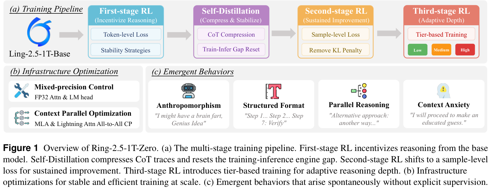
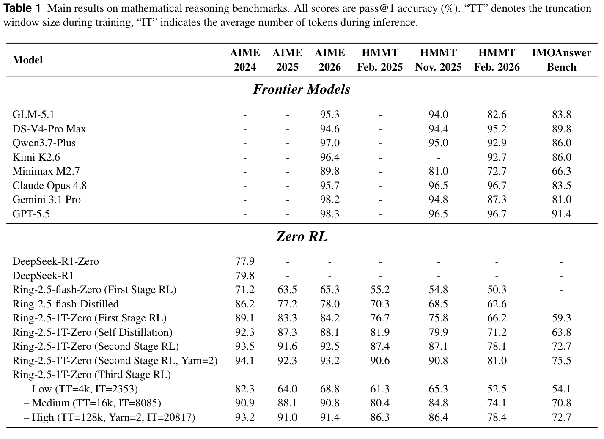
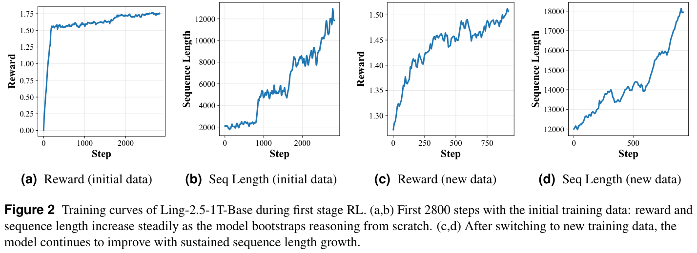
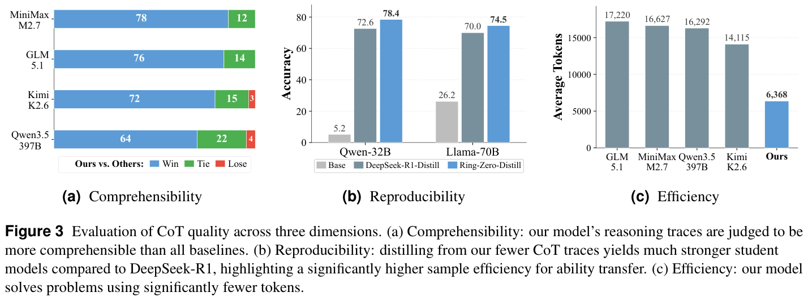
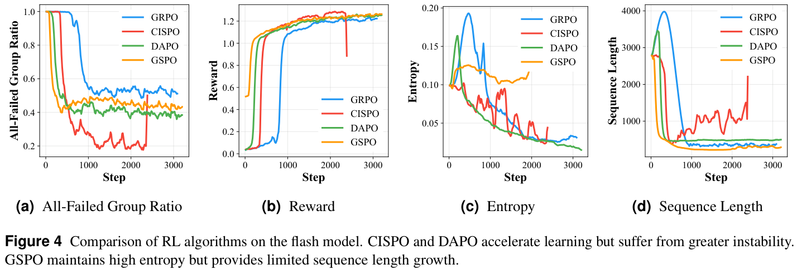
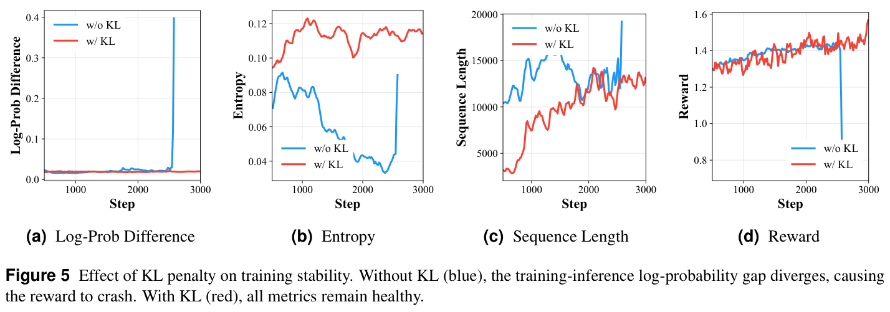
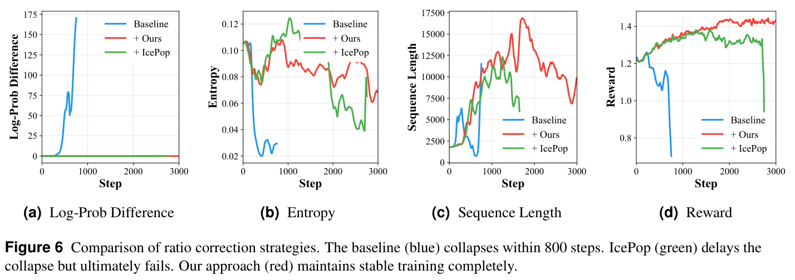
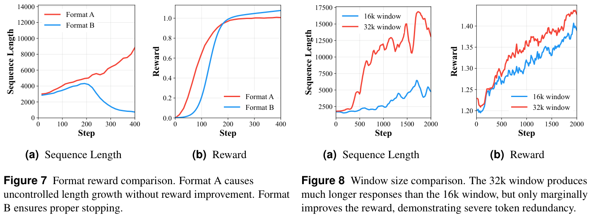
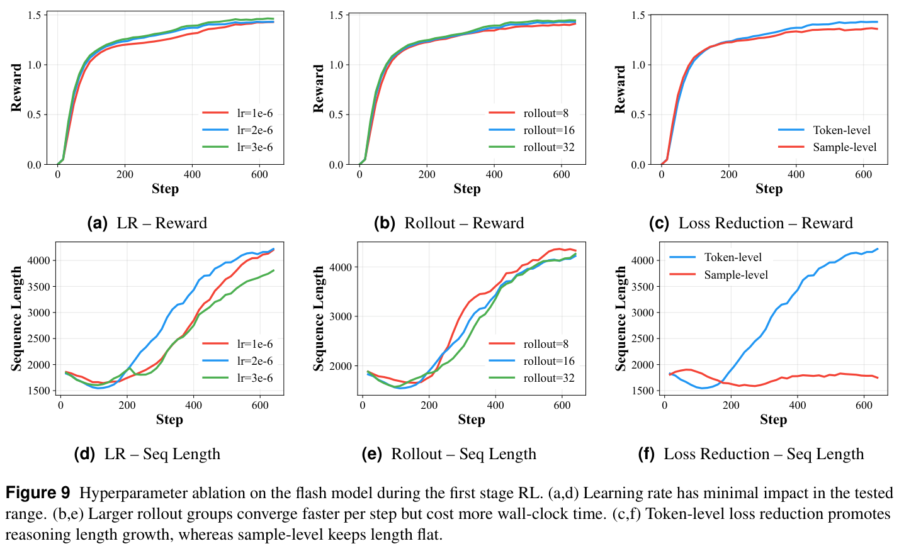
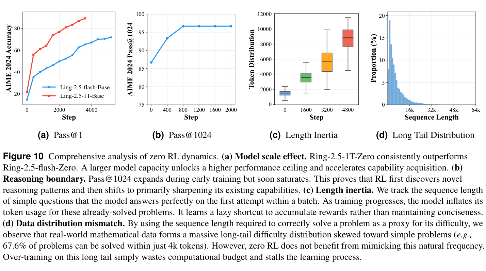

Ring-Zero：将 zero RL 扩展至万亿参数，激发涌现推理能力
Xinyu Tang1,*，Qianggang Cao2,*，Yurou Liu1，Yuliang Zhan1，Xiaochong Lan3，Yifan Li1，Yuchen Yan4，Han Peng1，Zican Dong1，Zhenduo Zhang2，Tianshu Wang2，Xinyu Kong2，Zujie Wen2，Wayne Xin Zhao1,‡，Zhiqiang Zhang2,‡，Jun Zhou2
1中国人民大学高瓴人工智能学院 2蚂蚁集团
3清华大学 4浙江大学
*同等贡献。‡通讯作者。
摘要
无需人工标注数据的可验证奖励强化学习（RLVR），通常称为“zero RL”，已成为激发 chain-of-thought（CoT）推理的强大范式。然而，受计算资源限制，现有研究主要局限于小模型，大规模下的训练动态与涌现能力仍未得到探索。为了对这一前沿开展有意义的探索，我们旨在从模型中激发高质量推理行为。但我们发现，简单地扩大规模往往会导致可读性差、token 冗余，以及缺乏自适应推理深度。为应对这些挑战，我们提出了一条稳定、高效的训练流水线，纳入了截断重要性采样、训练与推理比率校正以及混合精度控制等算法与系统优化。我们的实验给出三项关键发现，验证了规模扩展的“苦涩教训”：（1）扩展至1T参数，显著提高了样本效率与性能上限；（2）训练过程依次经历初始的“发现”阶段和随后的“锐化”阶段；（3）模型自发发展出拟人化、结构化格式、自我验证、并行推理和上下文焦虑等高级认知行为，使手工设计的启发式方法变得多余。在七个具有挑战性的数学基准上评估时，Ring-2.5-1T-Zero 取得了有竞争力的性能。此外，为了在最终答案正确性之外评估 CoT 质量，我们提出了一个涵盖可理解性、可复现性与效率三个维度的结构化评估框架；在该框架下，我们的模型在生成结构清晰、简洁的推理轨迹方面表现出明显优势。通过分享实验细节和观察到的涌现现象，我们希望帮助社区更深入地理解规模扩展行为，尤其是万亿参数规模下的行为。
1 引言
除了模型参数规模的扩展，chain-of-thought（CoT）推理（Wei et al., 2022; Kojima et al., 2022; Lightman et al., 2024）也已成为测试时计算的一项关键扩展维度，并确立为大语言模型（LLM）（Zhao et al., 2026; Brown et al., 2020; Kaplan et al., 2020）解决复杂任务的基础能力。近期工作（Shao et al., 2024）表明，可验证奖励强化学习（RLVR）能够有效增强推理能力。尤其是，“zero RL”范式（Guo et al., 2025）不同于传统的模仿学习：它直接从预训练基础模型启动 RL，完全绕过对有监督 CoT 数据的需求，并已被证明能够激励问题求解策略的涌现。这一突破表明，（接下页）
（接上页）
强大的推理能力可以纯粹通过试错式强化学习培养出来，从而摆脱对昂贵、精心整理的推理示范的依赖。
过去一年，研究社区对直接从基础模型激发推理行为表现出浓厚兴趣。大量工作聚焦于高质量数据整理，生成多样化的 chain-of-thought 数据集，以启动推理能力（Dobler et al., 2026; Huang et al., 2026; Zeng et al., 2025a）。在这些基础之上，人们提出了各种策略优化算法，以稳定优化过程（Zheng et al., 2025a; Yao et al., 2025; Tang et al., 2025）并提高优化效果（Yu et al., 2025; MiniMax, 2025; Chen et al., 2025b）。为了支撑这些密集的算法工作负载，可扩展训练基础设施也同步演进（Hu et al., 2024; Sheng et al., 2025; Zhu et al., 2025; Fu et al., 2025）。然而，受计算需求所限，绝大多数现有研究依赖相对较小的模型。虽然这些研究提供了宝贵见解，但一个根本问题仍未解答：当 zero RL 应用于万亿参数模型时，其训练动态与涌现能力将如何演变？更大的模型拥有丰富得多的预训练知识，以及能够通过优化发掘的潜在能力（Guo et al., 2025）。因此，探索如此大规模的 zero RL，对于勾勒自我演进推理的真实边界至关重要。
为了对这一前沿开展有意义的探索，我们的首要目标是从模型中激发高质量推理行为，而这自然要求我们首先定义什么是高质量的推理过程。虽然获得正确的最终答案至关重要，但推理路径本身的质量同样重要。我们认为，理想的 CoT 轨迹不仅应当正确，还应当让人类读者容易理解、便于验证，并且在计算上简洁，以节省推理资源。然而，我们发现，直接应用 zero RL 会严重偏离这些理想，暴露出若干关键局限。首先，现有推理轨迹往往可读性较差。它们通常缺乏符合逻辑的排版和清晰结构，使人们难以跟随并理解思考过程。其次，GRPO 等标准算法往往通过给予较长序列不成比例的贡献归因，引入隐式长度偏差。虽然 token 级损失在训练早期鼓励探索，但最终会导致失控的长度增长与 token 冗余，使推理过程极其低效。此外，不同问题本来就需要不同程度的推理深度，但标准训练流水线通常生成的是受固定响应预算限制的单一模式模型。
在本研究中，我们提出一条万亿参数的自迭代流水线，从零开始训练模型，使其涌现推理能力。探索中的一个关键认识是：要在1T规模上稳定训练，只需要几项简单却关键的修改。在这一原则指导下，我们的流水线避免繁重的工程设计。它只结合了用于激励推理的截断重要性比率策略 gradient 与训练和推理比率校正，用于压缩和稳定的自蒸馏，用于稳定训练的样本级损失归一化，以及用于灵活推理深度的分档自适应训练。我们还实现了混合精度控制与上下文并行等基础设施优化，以实现稳定、高效的训练。
我们的万亿参数实验直接回答了核心问题，并深刻验证了人工智能中的“苦涩教训”：海量计算与规模最终会超越人工设计的启发式方法。我们将认识概括为三个关键发现。第一，规模决定能力上限。相比104B模型，1T模型表现出高得多的样本效率，并达到显著更高的性能上限。第二，我们的分析揭示了“发现还是锐化”之争，表明两种现象作为先后阶段共同存在。初始的“发现”阶段解锁休眠路径以扩展推理边界，随后进入漫长的“锐化”阶段，模型在新建立的边界内完善策略。第三，也是最引人注目的一点，我们观察到高级认知策略自发涌现。研究人员以往通过设计复杂流水线来激励更好的思考机制，而 Ring-2.5-1T-Zero 使这些手工设计的（接下页）
（接上页）
启发式方法变得多余。仅由这种无需任何人工标注数据的自迭代训练过程驱动，模型就会自主收敛至若干关键涌现行为，将它们作为最优的数学求解方式：拟人化、结构化格式、自我验证、并行推理和上下文焦虑。
最后，我们在七个具有挑战性的数学基准上评估 Ring-2.5-1T-Zero，发现其取得了与前沿模型相当的竞争力。此外，为了超越单纯的最终答案准确率来评估 CoT 质量，我们提出了一个涵盖可理解性、可复现性和效率三个维度的结构化评估框架。在这些指标下，我们的模型在生成结构清晰、人类可读且简洁的推理轨迹方面表现出明显优势。
我们的主要贡献概括如下：
- 我们证明，仅需少量算法和系统改进（例如截断重要性采样、训练与推理比率校正、混合精度控制），自迭代训练过程就能保持稳定高效，成功训练出具有竞争力的 Ring-2.5-1T-Zero。
- 我们提出一个 CoT 质量评估框架，从可理解性、可复现性和效率三个维度评估推理轨迹。该框架超越最终答案准确率，为理解推理过程本身的质量提供诊断信号。
- 我们提供了对大规模“苦涩教训”的实证验证，表明扩展至万亿参数模型可以解锁更高的样本效率与性能上限，同时使拟人化、结构化格式、自我验证、并行推理和上下文焦虑等高级认知策略自主涌现，从而使手工设计变得多余。
2 Chain-of-Thought 质量的评估指标
评估 chain-of-thought（CoT）推理的质量仍是一个开放性挑战。目前，大多数评估（GLM, 2026; Kimi, 2026）都依赖最终答案准确率这一唯一指标。然而，准确率只衡量最终结果，将底层推理过程视为黑盒。随着 LLM 越来越多地部署于复杂任务与 agent 工作流，CoT 轨迹承担着双重作用：既提供人类可读的解释，也作为下游 agent 系统的关键中间步骤。因此，全面评估必须超越单纯的正确性。
在实验之前，我们预先定义了理想 CoT 轨迹应具备的若干基本特征。在这些期望指导下，我们构建了结构化评估框架，沿三个互补维度衡量 CoT 质量：可理解性、可复现性与效率。可理解性确保逻辑透明且便于人类阅读；可复现性衡量较弱模型能否有效、高效地学会推理策略；效率则评估生成内容是否简洁且计算成本合理。这三个维度独立于最终答案的正确性，又与之高度互补。
2.1 可理解性
可理解性衡量人类读者能够在无需外部上下文、也不承受较高认知负担的情况下跟随推理步骤的程度。透明的 CoT 轨迹应具备连贯的逻辑流程、步骤之间明确的因果依赖，并且没有幻觉性主张。当任意一项性质遭到违反时，轨迹便无法实现其首要解释目的，进而削弱用户信任。
为了定量评估可理解性，我们通过成对比较采用 LLM-as-a-Judge 框架。给定相同问题，作为评判者的 LLM 评估不同模型的 CoT 轨迹，并选择其中（接下页）

（接上页）
逻辑更连贯、表述更清楚且推理缺陷更少的一条轨迹。完整评估提示详见附录B。
2.2 可复现性
可复现性评估缺乏先验领域知识的 agent（例如新手人类或较弱的学生模型）能否有效、高效地学会底层推理过程，并获得相当的任务求解能力。理想轨迹编码的是能够泛化的问题求解策略，而非直觉性的跳跃，使较弱学生模型也能学会底层逻辑。
我们通过知识蒸馏衡量可复现性。在生成的 CoT 轨迹上微调较弱模型后，我们用学生模型的下游性能增益作为代理指标。改进越大，说明教师轨迹包含的推理技能越丰富、越容易迁移。
2.3 效率
效率评估模型简洁地解决问题的能力，即避免不必要的冗长表达、重复推导或循环论证。此外，随着 CoT 轨迹深度融入 agent 工作流，生成效率会直接转化为更快的推理速度与更低的 token 成本。高效的 CoT 能够分离出通向解答的关键路径，同时不牺牲清晰度或正确性。
实际中，我们通过计算正确 CoT 轨迹的平均 token 数来衡量效率。在有效解答中，token 越少表示效率越高，说明模型找到了直达答案的最优路径，而非在无关探索中迂回。
3 方法
本节介绍一个不依赖人工标注数据、直接从基础模型激发并扩展推理能力的训练框架。我们框架的核心设计原则是极简。我们的发现表明，过于复杂的算法设计往往没有必要；在这一认识指导下，我们只在引导模型迭代学习确实需要时才引入优化要素。首先，我们概述多阶段训练流水线（第3.1节），通过三个 RL 阶段及中间的自蒸馏阶段逐步构建推理能力。随后，我们详细介绍使大规模长上下文 RL 稳定高效的基础设施优化（第3.2节）。
3.1 Zero 强化学习训练流水线
我们的训练流水线包含四个不同阶段。在第一个 RL 阶段（第3.1.1节），我们结合 KL 正则化与 token 级损失，使用截断重要性比率策略 gradient，从预训练基础模型中激发推理。接下来，我们应用自蒸馏（第3.1.2节），压缩学到的推理轨迹，并弥合训练与推理之间的差距。第二个 RL 阶段（第3.1.3节）采用样本级损失归一化，恢复 RL 训练并实现稳定优化。最后，第三个 RL 阶段（第3.1.4节）引入分档训练，使模型具备适用于不同难度等级的自适应响应模式。
3.1.1 第一阶段 RL：推理激发
在 Zero-RL 中，我们直接从缺乏初始推理能力的预训练基础模型开始训练。这种模型很少生成逐步推导，因为推理 token 在基础策略下的概率很低。为了激发这些潜在能力，初始 RL 阶段必须大幅放大低概率推理 token。因此，我们采用截断重要性采样策略 gradient（MiniMax, 2025）。标准 PPO-clip 会将截断范围之外 token 的 gradient 完全置零；与之不同，这种方法只对截断后的比率应用停止 gradient，同时允许所有 token 的 gradient 流动。这样可以确保每一个生成的 token 都为学习过程作出贡献，对于从零构建推理能力至关重要。具体而言，目标定义为：
其中，\(q\) 是从数据集 \(\mathcal{D}\) 中采样的输入问题，\(\{o_i\}_{i=1}^{G}\) 是推理引擎 \(\pi_S\) 生成的 \(G\) 个 rollout 响应，\(o_{i,t}\) 是第 \(i\) 个响应的第 \(t\) 个 token，\(\hat A_{i,t}\) 是使用 GRPO 式组归一化奖励计算的优势估计（Guo et al., 2025），\(\operatorname{sg}(\cdot)\) 表示停止 gradient 算子，\(\hat\rho_{i,t}\) 是下文定义的截断重要性比率。
然而，放大低概率 token 会放大一个关键的系统级脆弱点：训练引擎（Megatron）与推理引擎（SGLang）之间的数值差异。浮点精度和算子实现上的差异会产生略有不同的 logits。为避免这些微小差异累积成宏观的训练崩溃，我们用实际训练引擎的 logits 替换重要性采样比率的分子：
其中，\(\pi_M^\theta\) 是训练引擎中以 \(\theta\) 为参数的当前策略，\(\pi_S^{\theta_{\mathrm{old}}}\) 是推理引擎使用先前参数 \(\theta_{\mathrm{old}}\) 的 rollout 策略，\(\hat\rho_{i,t}\) 是截断后的比率。我们不对 IS 权重施加下界，而只设置上界 \(\epsilon_{\mathrm{high}}\)，防止更新过大。这样计算得到的比率准确反映了训练引擎与推理引擎之间的真实差异。为了进一步稳定训练，我们相对于冻结的参考模型施加 KL 散度惩罚，防止策略偏离参考模型过远：
其中，\(\pi_{\mathrm{ref}}\) 是冻结的参考策略模型。
最后，由于基础模型倾向于生成较短响应，我们采用对全部 token 求和、但不按响应长度 \(|o_i|\) 归一化的 token 级损失，显式鼓励更长的生成，如公式1所示。这样可以确保较长的正确响应积累更强的 gradient 信号。为了逐步提高推理能力，我们在整个训练过程中以课程学习的方式逐步扩展响应窗口长度。第一阶段 RL 的组合目标 Ring-2.5-1T-Zero-I 为：
其中，\(\beta\) 是平衡探索与稳定性的 KL 惩罚系数。
3.1.2 自蒸馏：压缩与稳定
虽然第一阶段 RL 成功激发了推理能力，但无约束的 token 级损失引入了两个关键缺点。首先，生成的 chain-of-thought（CoT）轨迹会变得过长，往往充斥着重复步骤、循环逻辑或不必要的冗长表达。其次，这种极端长度会严重破坏 RL 过程的稳定性。由于训练与推理引擎之间的数值差异会在训练过程中累积，训练与推理之间的差距会被急剧放大，导致优化崩溃。
为了在进入下一个 RL 阶段前解决冗长与不稳定这两个问题，我们引入自蒸馏阶段来重置模型。具体而言，我们使用第一阶段的专家策略 \(\pi_{\mathrm{expert}}\) 为每个查询采样多个 rollout。随后应用两步长度精炼过程：首先，在这些 rollout 中选择最短的正确推理轨迹；其次，提示模型对所选轨迹进行自我评估，并过滤掉它判定为冗余的所有剩余片段。该机制有效裁去循环逻辑，并在不牺牲正确性的前提下压缩冗长推导。最后，我们使用这种精炼的高质量语料，通过标准有监督学习对原始基础模型进行微调：
其中，\(o\) 表示经过长度精炼的响应，\(\pi^\theta\) 是预训练基础模型。通过使用缩短后的响应进行蒸馏，模型在获得专家推理能力的同时生成简洁得多的轨迹，并有效消除引擎间累积的数值误差，从而为后续 RL 阶段提供能力强、简洁且稳定的基础。
3.1.3 第二阶段 RL：持续优化
经过自蒸馏后，模型的训练与推理差距显著减小，为下一阶段 RL 提供了稳定起点。为了保持稳定性，我们沿用第一阶段的截断重要性采样策略 gradient 和比率校正。
本阶段的关键变化是损失计算策略。在第一阶段，token 级损失对于鼓励较长响应是必要的。然而，模型此时已能够自然生成较长的 chain-of-thought。继续使用 token 级损失会导致输出长度无界增长，破坏自蒸馏带来的简洁性。为了控制响应长度，我们转向样本级损失，使 gradient 幅度独立于输出长度：
相比公式1，唯一变化是归一化因子 \(\frac{1}{|o_i|}\)。此外，我们在本阶段移除 KL 惩罚。由于蒸馏后的模型已经提供了强大的起点，KL 约束会对进一步探索施加不必要的限制。这种样本级形式与移除 KL 正则化相结合，确保了长时间 RL 训练步骤中的稳定优化。
3.1.4 第三阶段 RL：自适应推理深度
经过两个 RL 阶段后，模型表现出强大的推理能力，但运行于固定长度预算的单一模式中。在现实场景中，不同问题需要不同层次的推理深度。简单问题需要简短回答，而复杂问题则受益于更长的推理路径。为了培养认知路由能力，我们在第三阶段引入分档训练策略，使模型具备多种响应模式。
我们将训练问题划分为三个难度档位，每个档位由特定的最大 token 长度和相应系统提示 \(p_k\) 控制：
其中，\(\mathcal{T}_l\)、\(\mathcal{T}_m\) 和 \(\mathcal{T}_h\) 分别表示低、中、高难度档位。第三阶段 RL 目标 Ring-2.5-1T-Zero-III 纳入这些提示：
其中，\(\mathcal{D}_k\) 是分配至档位 \(k\) 的问题子集，\(p_k\) 是相应的系统提示。rollout 策略 \(\pi\) 以系统提示和问题两者为条件生成响应，并在给定窗口大小处截断输出。这一机制教会模型自适应地分配计算：它学会简洁地回答简单查询，同时为复杂问题保留详尽的 CoT 生成。在部署时，用户可以通过系统提示显式控制这种行为。
3.2 基础设施优化
将 RL 扩展至长上下文窗口，会暴露数值稳定性和通信延迟两方面的关键瓶颈。我们通过两项有针对性的优化应对这些挑战。首先，我们使用混合精度控制确保训练稳定性（第3.2.1节）。其次，我们优化上下文并行以最大化吞吐量（第3.2.2节）。
3.2.1 混合精度控制
在 RL 训练中，重要性比率 \(\rho_{i,t}\) 计算的是两个 token 概率之比。这些概率由 logits 通过 softmax 函数得到，其中涉及指数运算。指数函数天然会放大微小数值误差。logit 中很小的误差可能膨胀为概率比率中的巨大差距，彻底破坏训练过程的稳定性。因此，前向传播中任何涉及指数运算的组件都对精度高度敏感。具体而言，这指向两个关键位置：attention softmax 和 LM head。
为解决这一问题，我们实现了一种简单而有效的混合精度策略：将模型主体保持为 BF16，但以 FP32 计算 attention softmax 和 LM head。通过严格地只在这两个敏感位置使用高精度，我们避免了小舍入误差发展成巨大的 RL 损失。在实践中，这种有针对性的调整消除了损失的突然尖峰，并成功弥合了训练引擎（Megatron）与推理引擎（SGLang）之间的数值差距。
3.2.2 上下文并行优化
使用长上下文窗口训练，需要通过上下文并行（CP）将单条长序列划分到多个设备上。标准 ring attention（Liu et al., 2023）通过沿环依次传递键值（KV）分块来解决这一问题。然而，这种设计迫使每个设备等待与所有其他设备的一整轮通信完成，才能结束其 attention 计算。随着并行规模增长，这种顺序依赖会产生严重的延迟瓶颈。
为了突破这一瓶颈，我们针对模型由 MLA 与 Lightning Attention 层构成的混合架构，定制了 CP 策略。对于 MLA 层（DeepSeek-AI, 2024），我们采用 all-to-all CP 策略。该方法通过一次集合操作，沿 head 维度重新分布数据。这样，每个设备都可以独立计算部分 head 在整条序列上的完整 attention。由于 MLA 将键和值压缩到低秩潜在空间，与发送完整 KV 张量相比，all-to-all 通信量大幅降低。对于 Lightning Attention 层（Qin et al., 2024），计算依赖一个小型、固定大小的 KV 状态矩阵。我们不再沿环依次传递这一状态，而是使用单次 AllGather 操作。该操作将所有局部状态同时广播给每个设备，使它们能够立即完成计算。这些优化与标准 ring attention 在数学上等价，并产生完全相同的 gradient。
4 实验
本节介绍实验评估。我们首先描述实验设置，然后报告主要结果，将我们的模型与当前前沿模型比较，最后提供详细分析以验证关键设计选择。
4.1 实验设置
下面概述实验设置的关键组成部分，涵盖模型配置、训练细节、奖励设计和评估指标。
基础模型。我们从两个未经过任何有监督微调的预训练 Ling-2.5 基础模型（Team and AI, 2025）开始 zero RL 训练。这两个模型是：（1）Ling-2.5-1T-Base，一个总参数1万亿、激活参数63B的混合专家（MoE）模型；（2）Ling-2.5-flash-Base，一个总参数104B、激活参数7.4B的 MoE 模型。两个模型均通过我们的四阶段流水线从头开始训练，依次经历第一阶段 RL、自蒸馏、第二阶段 RL，最后是第三阶段 RL。
训练基础设施。所有实验均在320张 H200 GPU 上运行。我们采用混合架构，由 Megatron 作为训练引擎，SGLang 作为 rollout 引擎。RL 训练过程由 Areal（Fu et al., 2025）框架编排。
超参数。我们的训练首先遵循 off-policy RL 设置，batch size 为512，mini-batch size 为32，随后使用256的 batch size 与32的 mini-batch size。在所有 RL 阶段中，我们均使用 Adam 优化器，\(\beta_1=0.9\)、\(\beta_2=0.999\)，恒定学习率为 \(2\times10^{-6}\)，权重衰减为0.01。对每个问题，我们以1.0的温度生成 \(G=16\) 个 rollout 响应。为了鼓励探索，我们不对重要性采样比率施加下界，只用 \(\epsilon_{\mathrm{high}}=5.0\) 截断上界，防止更新过大。在第一阶段 RL 中，我们结合 KL 惩罚（\(\beta=10^{-4}\)，K3散度）使用 token 级损失。我们每400步使用最新 checkpoint 更新参考模型，确保 KL 锚点随着策略改进保持相关性。我们逐步扩展（接下页）
（接上页）
响应窗口，以课程学习方式将其从4k扩展至64k token，每800个训练步骤将上下文窗口扩大一倍。第一阶段 RL 结束后，我们从该阶段的专家模型整理并过滤高质量响应。然后以64k序列长度和 \(7\times10^{-5}\) 的学习率，对基础模型微调3个 epoch。在第二阶段 RL 中，我们切换至样本级损失，并移除 KL 惩罚。这一调整防止了失控的长度增长，实现高度稳定的训练。在第三阶段 RL 中，我们将问题划分为低（4k）、中（16k）和高（64k）三个难度档位。每个档位接收特定的系统提示，教会模型根据可用推理预算调整推理深度。
奖励设计。在整个训练过程中，奖励由准确率部分与格式部分组成：
其中，\(r_{\mathrm{format},i}\in\{0,1\}\) 检查响应是否遵循要求的结构，具有 <think>...</think> 和 <answer>...</answer> 标签；\(r_{\mathrm{acc},i}\in\{0,1\}\) 则衡量最终答案的正确性。在训练早期，我们使用容易验证的问题。遵循先前工作（Guo et al., 2025），它们的正确性可以通过确定性的规则匹配判断。在后期，问题变得困难得多。答案可能具有多种有效形式，或需要语义理解。因此，基于规则的验证不再可靠。我们用 LLM-as-a-Judge 评估器（即 Qwen3-Next-80B-A3B-Instruct）替换 \(r_{\mathrm{acc},i}\)。这一评判者同时接收模型响应和参考答案，输出二元正确性判断。
评估指标。我们在七个具有挑战性的数学推理基准上评估模型：AIME 2024、AIME 2025、AIME 2026、HMMT February 2025、HMMT November 2025、HMMT February 2026 和 IMOAnswerBench。遵循 Guo et al.（2025），推理时将温度设为0.6，top-k设为0.95。在所有评估中，我们报告64次运行平均后的 pass@1 准确率，以尽量降低方差。对于多档位模型（第三阶段 RL），我们报告三种不同推理模式下的结果：高（64k预算）、中（16k预算）和低（4k预算）。
4.2 主要结果
表1给出了主要结果，在多个数学推理基准上将我们的 Ring-2.5-1T-Zero 模型与最先进的专有模型进行比较。此外，图2展示了第一阶段 RL 的完整训练动态。通过将训练划分为两个不同阶段，并逐步使用更难的数据（即从相对简单的数据开始，再使用更难的数据来推动推理上限），我们确保了稳定而持续的优化过程。
Zero RL 从零开始实现了有竞争力的推理。不依赖任何人工标注数据，Ring-2.5-1T-Zero（第一阶段 RL）就已在 AIME 2026 上达到令人瞩目的84.2%准确率。这一有力结果凸显，第一阶段 RL 能够直接从预训练基础模型启动高级数学推理。将响应窗口从4k逐步扩展至64k token 的渐进式课程，结合重要性比率校正，稳定、有效地激励模型发展出涌现的 chain-of-thought（CoT）行为。这表明，只要通过精心正则化适当地约束探索空间，大语言模型就天然具备无需人工标注轨迹、自行发现复杂逻辑推导的能力。
多阶段训练带来持续改进。流水线中的每个后续阶段都带来可衡量的性能增益，验证了多阶段方法的整体有效性。具体而言，自蒸馏阶段稳定了模型，为长期 RL 优化做好准备。随后，第二阶段 RL 纳入样本级损失以促进持续性能改进，而（接下页）

（接上页）
第三阶段 RL 应用分档训练，将自适应推理深度纳入模型能力。通过将监督粒度从 token 级（第一阶段 RL）转为样本级（第二阶段 RL），并以自蒸馏为锚点，我们构建了平滑得多的优化景观，以实现持续推理改进。
自适应推理模式提供灵活的性能与效率权衡。Ring-2.5-1T-Zero 的三个推理档位（低、中、高）让用户能够在推理时细粒度地控制推理深度。虽然中等（TT=16k）与低（TT=4k）模式在保持竞争力的同时有效降低推理延迟与计算成本，但我们观察到，第三阶段 RL 相比第二阶段的峰值性能略有下降。该下降主要由两个因素导致：首先，高质量超长推理数据不足，限制了高档位模式的上限；其次，在三种不同长度上联合训练会引入负迁移，低、中档位模式的训练信号会略微拉低高档位模式的峰值能力。尽管如此，我们的自适应策略成功地将计算扩展从僵化的一刀切方式，转变为动态、依查询而定的分配，证明许多查询根本不需要详尽推理。
扩大模型规模会放大 Zero RL 的收益。比较1040亿参数的 Ring-2.5-flash-Zero 与1万亿参数的 Ring-2.5-1T-Zero 时，我们观察到更大模型容量从 Zero RL 范式中获得了不成比例的收益。在更困难的基准上，性能差距显著扩大。这一趋势清楚表明，大幅扩展参数规模至关重要，尤其是在 Zero RL 设置下。在 zero RL 机制中，模型的探索能力受到其内部世界模型的严格限制。更多参数提供了自主探索庞大搜索空间所需的表示容量和更广泛的（接下页）

（接上页）
内部知识库。
4.3 CoT 质量的其他评估
除最终答案准确率之外，我们还从三个互补维度评估模型 CoT 推理轨迹的质量：可理解性、可复现性和效率。如下所示，我们的 zero-RL 模型不仅具有高准确率，而且生成的推理轨迹非常易读、易于迁移，token 效率也十分突出。
4.3.1 可理解性
除了定量的规模扩展，我们还观察到一个有趣的定性现象：1T模型自发发展出按结构分段的推理。即使没有显式的格式约束，它也会自然地使用 Step 1: 和 Step 2: 等标记划分推理阶段（见第6.2节）。人类参考解答通常是经过高度整理的摘要，而这些涌现的轨迹则捕捉到一种真实的、类似搜索的过程，以试错、自我反思和并行探索为特征。这些步骤标记的自发涌现提供了深刻见解。它表明模型并非只是在进行连续的贪心生成流；相反，它表现出某种局部前瞻规划，在实际生成之前，先为即将到来的 token 块设定认知意图。
为了定量评估可理解性，我们使用 LLM-as-a-Judge 协议进行成对比较。在全部90道 AIME 问题（2024年至2026年）上，我们将模型的推理轨迹与四个强基线（GLM-5.1、Kimi-k2.6、MiniMax-M2.7 和 Qwen3.5-397B）比较，重点关注逻辑连贯性、因果关系的明确程度，以及是否存在幻觉。如图3(a)所示，我们的模型在所有比较中均取得压倒性胜率。这证实，涌现的结构化推理反映了更优的逻辑组织，使人类读者更容易理解和跟随。
4.3.2 可复现性
CoT 质量的一项关键指标是：推理轨迹能否作为较弱模型的有效训练信号。我们将模型推理轨迹蒸馏至 Qwen2.5-32B 与 Llama3.3-70B-Instruct 模型中，以评估这种可复现性，并与相同配置下从 DeepSeek-R1 蒸馏的模型比较。值得注意的是，我们只使用100K条数据样本就取得了这些蒸馏结果，相比 DeepSeek-R1 使用的800K条样本，仅为其一小部分。如图3(b)所示，尽管数据量显著更少，从我们轨迹蒸馏得到的模型仍持续优于对应的 DeepSeek-R1 蒸馏模型。我们观察到 Qwen-32B 上有5.8个百分点的（接下页）


（接上页）
提升（78.4 对72.6），Llama-70B 上则提升4.5个百分点（74.5 对70.0）。这表明，按步骤分段的推理轨迹提供了更丰富、更容易迁移的学习信号，从而在知识蒸馏中带来高得多的样本效率。
4.3.3 效率
最后，我们评估模型是否能够使用更少的推理 token 达到高准确率。我们选出全部五个模型（我们的模型与四个基线）都回答正确的问题子集，然后比较它们在这一共同子集上 CoT 轨迹的平均 token 数。
如图3(c)所示，在共同解出的 AIME 问题上，我们的模型平均只使用6,368个 token，不到其他模型的一半。这种显著效率优势表明，我们的 CoT 帮助模型消除冗余探索步骤，使其能够通过直接得多的逻辑路径得到正确解答。
4.4 详细分析
本小节给出详细消融研究，以验证关键设计选择。受计算资源限制，我们在 Ling-2.5-flash-Base 模型上进行全部消融实验。

4.4.1 不同 RL 算法的影响
我们在相同设置下比较四种 RL 算法：GRPO（Guo et al., 2025）、DAPO（Yu et al., 2025）、CISPO（MiniMax, 2025）和 GSPO（Zheng et al., 2025a）。所有方法使用相同的基础模型、学习率和训练数据，唯一差别在于策略 gradient 的计算方式。如图4所示，CISPO 与 DAPO 都在 GRPO 基础上放大低概率 token 的 gradient 信号。与原始 GRPO 相比，这有效地更快降低了组内全部失败的比例。两种算法的奖励增长和序列长度增加也更快。然而，这种加速以稳定性为代价。CISPO 最容易发生熵崩溃和训练不稳定，其次是 DAPO，再其次是 GRPO。奖励改善速度与不稳定程度遵循完全相同的顺序：CISPO > DAPO > GRPO。这证实了我们的假设：放大低概率 token 对于从零激发推理非常有效，但需要谨慎地稳定训练。相比之下，GSPO 使用样本级损失显式维持高熵。虽然这可以防止熵崩溃，但几乎无法激励模型探索更长的序列。因此，它不适合用于启动早期推理能力。
4.4.2 RL 稳定策略的影响
以上分析揭示了一项根本权衡：大幅放大低概率 token 的算法学习更快，但本质上稳定性更差。因此，我们研究两种互补的稳定策略，在保留快速学习的同时保持训练稳健性。
KL 惩罚。我们比较相对于参考模型施加和不施加 KL 散度惩罚（公式4）的训练运行。如图5所示，移除 KL 惩罚会导致灾难性失败。训练引擎与 rollout 引擎之间的对数概率差异无界增长，熵发生崩溃，奖励最终骤降。施加 KL 惩罚时，所有训练指标均保持稳定。数值差距受控，熵维持在有利于保留探索的健康水平，奖励稳步提高。KL 惩罚起着至关重要的正则化作用。它约束整体策略漂移，防止过早熵崩溃，并维持模型的探索能力。
失配缓解策略。在我们的 off-policy RL 设置中，推理引擎（SGLang）生成 rollout，而训练引擎（Megatron）计算 gradient。标准策略优化完全使用推理引擎生成的 logits 计算重要性比率。然而，由于浮点差异，即便权重完全相同，两个引擎也会产生细微不同的 logits。当我们放大低概率 token 时，这种数值失配会被严重放大。我们提出一个直接的修正方法。


我们用实际训练引擎的 logits \(\pi_M^\theta\) 替换重要性比率的分子（公式2）。这样就完全消除了推理引擎重新计算 logits 的需要。我们比较三种配置：（1）Baseline：只使用 SGLang logits 的标准比率；（2）+ IcePop：在基线上加入截断重要性比率阈值处理；（3）+ Ours：使用 Megatron 作为分子、SGLang 作为分母。如图6所示，基线在大约800步内崩溃。对数概率差距爆炸，熵降至零，奖励骤降。IcePop 延缓了这种崩溃，但最终在约2700步时失败。我们的方法成功保持了稳定的 RL 训练。对数概率差异保持接近零，熵得到保留，奖励持续改善。重要的是，我们的方法避免了阈值调优，并节省了计算时间。
4.4.3 格式奖励的重要性
格式奖励 \(r_{\mathrm{format},i}\) 强制模型遵守结构规则。我们比较两种格式规范：Format A 只要求一个起始标签：<think>...</think>...。Format B 要求两组闭合标签，并带有隐式终止规则：<think>...</think><answer>...</answer>。在 Format B 下，响应必须在最终闭合标签后以 EOS token 结束。
如图7所示，Format A 导致序列长度快速增加，而奖励完全停滞。检查原始文本后，我们发现模型利用了这种宽松格式。它在答案后不断附加无穷无尽的乱码，却从未正确停止。相比之下，Format B 严格要求 EOS token，只有正确终止的 rollout 才能获得任何贡献归因。这条严格规则阻止了尾随垃圾文本驱动的退化性长度增长。我们在所有训练阶段均采用 Format B。
4.4.4 zero RL 训练中的长度惯性
人们可能预期推理模型会根据问题的实际难度，自然调整输出长度。然而，我们的实验揭示了标准 RL 训练中的一个根本缺陷。我们将这一现象称为“长度惯性”。在早期阶段，策略优化依赖 token 级损失，这会隐式地给予较长序列更高的贡献归因。随着训练推进，模型发现一条偷懒的捷径：它学会了仅仅生成更多 token，在数学上就是获得高累计奖励的更稳妥方式。因此，如果没有显式控制机制，响应长度会随时间不断增长。
为了明确展示这种惯性，我们跟踪模型在首次 rollout 就已完美回答的简单问题的序列长度。如图10c所示，模型并未对这些已经解决的问题保持简洁作答。相反，随着训练继续，序列长度无条件地扩张。这证明标准 RL 训练范式使模型变得懒惰。由于强大的前向惯性，它不断增加 token 使用量，完全忽视任务的实际认知需求。
我们进一步比较16k与32k响应窗口的训练运行（图8），验证这种盲目扩张。模型并未将额外的32k容量留给真正困难的问题，而是在所有问题上一致地增加冗长程度。32k设置生成的平均响应长度接近16k设置的两倍，但只带来微小的奖励收益。这证实，模型只是在盲目填满可用上下文窗口，而非适应认知复杂性。
4.4.5 超参数分析
学习率。我们评估 \(1\times10^{-6}\)、\(2\times10^{-6}\) 和 \(3\times10^{-6}\) 三种学习率。如图9a和图9d所示，三种设置都收敛至高度相似的奖励水平和序列长度。这证明训练对于这一量级内的学习率变化具有稳健性。
Rollout 数量。我们将每个问题的 rollout 样本数设为 \(G\in\{8,16,32\}\) 进行变化。如图9b和图9e所示，按训练步骤计算，\(G=32\) 收敛最快。然而，由于计算开销更低，按实际墙钟时间计算，\(G=8\) 收敛最快。在实现中，我们采用 \(G=16\) 作为均衡的默认值，在降低 gradient 方差与计算效率之间取得更好的权衡。
损失归约。我们比较 token 级与样本级损失归约。token 级归约对每个 token 分配相等权重，自然偏向并鼓励较长响应。相比之下，样本级归约按序列长度归一化损失。如图9c和图9f所示，token 级归约显著促进 CoT 长度增长，而样本级归约使响应长度完全持平。这证实了我们的设计选择：token 级损失对于最初从零激励较长推理链至关重要。
5 讨论
5.1 模型规模对训练的影响有多大？
我们在相同训练配置下比较 Ling-2.5-flash-Base（104B参数）与 Ling-2.5-1T-Base（1T参数），研究模型规模如何影响 zero RL 训练。如图10a所示，两个模型都随时间稳步提高。然而，更大的模型表现出两项明显优势。首先，它达到更高的性能上限。训练3600步后，Ring-2.5-1T-Zero-I 在 AIME 2024 上达到89.06%，在 AIME 2025 上达到83.28%。相比之下，Ring-2.5-flash-Zero 即使训练5200步，也只达到71.72%（接下页）

（接上页）
和63.54%。其次，它表现出更高的样本效率。在整个训练过程中，Ring-2.5-1T-Zero 始终保持更快的推理能力提升速度。这些结果证实，海量参数容量是高效 zero RL 的根本前提。
5.2 强化学习真的会扩展 LLM 的推理边界吗？
RL 社区长期争论的一个问题是：RLVR 究竟会真正扩展模型的推理边界（Liu et al., 2025a），还是只是锐化已有分布（Yue et al., 2025a）？为解决这一二元争论，我们遵循 Yue et al.（2025a），跟踪训练早期的 pass@1024。该指标衡量1024个样本中至少一个正确解决问题的概率。
如图10b所示，我们的结果揭示，zero RL 实际上是一个明显的两阶段现象。可以看到，pass@1024 在训练初始阶段上升，但最终趋于平台。相比之下，pass@1 准确率在整个训练过程中持续稳步提高。这一现象给出了清晰认识。在早期，RL 通过发现预训练期间休眠的新推理模式，积极扩展模型的推理边界。训练数据有效解锁了模型此前从未展现的潜在能力。在后期，重点发生转移：RL 锐化输出分布并完善策略。它教会模型在既定推理边界内稳定地产生正确解答，从而推动 pass@1 持续提高。这一转变证明，一旦休眠能力被完全解锁，“发现”阶段便会结束。随后，RL 过程平滑地过渡至“锐化”阶段，不再进一步推动边界，而是专注于完善策略，以充分利用已经建立的能力极限。
5.3 如何在提高推理能力的同时保持效率？
采用 token 级损失的 GRPO 天然鼓励较长响应（Shao et al., 2024; MiniMax, 2025）。这是因为 gradient 幅度随序列长度直接增大。虽然这一特性（接下页）

（接上页）对于在早期启动 chain-of-thought 推理非常有效，但它会与推理效率形成严重冲突。模型很快就会学会生成更长的输出，即使额外文本并不能提升准确率。为缓解这种长度偏差，现有方法通常在奖励函数中加入显式长度惩罚（Cheng et al., 2025），或调整归一化策略（Liu et al., 2025b）。然而，这些技术不足以主动调节回复长度。依赖模型自行删减本质上是被动的，往往无法可靠抑制冗长表达，使模型容易生成不受约束的冗余输出。
相比之下，我们通过两个阶段的方法处理这一矛盾。首先，在自蒸馏阶段，我们主动精简推理轨迹。在将数据蒸馏回基础模型之前，删除重复的验证步骤、压缩冗长的子推导，并消除循环推理。这一过程得到的学生模型保留了专家模型的逻辑严谨性，但输出大幅缩短。其次，在第二阶段 RL 中，我们改用样本级 loss 归一化。这消除了偏向较长回复的数学偏差，使模型能够在不发生长度失控增长的情况下优化准确率。尽管这套流程实现了实用的折中，它仍是一种启发式的变通方案。理想方法必须在单一、统一的 RL 目标中，同时优化推理质量与 token 效率。
5.4 如何平衡训练效率与稳定性？
在数学推理的 zero RL 中，低概率 token 具有巨大价值（MiniMax, 2025）。这些 token 往往代表基础模型最初忽视的新颖解题策略、创造性证明技巧或非常规方法。放大这些特定 token 的作用会显著加快学习。我们的实验表明，显式增强低概率的正确 token，与原始 GRPO 相比能够显著加快收敛。然而，这种速度以稳定性的大幅损失为代价。当重要性比率 \(\rho_{i,t}\) 过大时，它会放大学习信号。不幸的是，它同时也会放大训练引擎与推理引擎之间潜在的数值不一致。
既有研究探索了多种稳定 RL 训练的策略，包括重要性比率裁剪（Team and AI, 2025）、采样比率校正（Yao et al., 2025），以及严格的 KL 散度约束（Shao et al., 2024）。（续下页）
（接上页）在最小改动原则指导下，我们的设计表明，将比率校正与 KL 散度惩罚联合使用，是调节训练稳定性最关键的机制。此外，我们发现，前面的自蒸馏阶段本身也能使基础模型更加稳定，为后续策略更新奠定更稳健的基础。具体而言，我们的方案在最大化低概率 token 收益的同时，部署严格的稳定机制。首先，KL 散度惩罚约束整体分布漂移，防止策略坍缩为一小组狭窄、退化的 token 序列。其次，我们的训练—推理比率校正从根本上消除了浮点差异，防止放大过程将数值误差放大到失控。两种机制协同作用，使我们既能享受极快的收敛速度，又能在数千步训练中保持完全稳定。
5.5 在大规模下，原生基于 RL 的 CoT 与基于蒸馏的方法相比如何？
原生 zero RL 具有一项根本优势：它不需要外部教师，能够独立推动前沿模型的推理边界。另一方面，蒸馏仍然具有很高的样本效率。在我们的实验中，仅将训练好的第一阶段 RL 专家模型的轨迹蒸馏到 Ling-2.5-flash-Base，就能达到或超过在 flash 模型本身上长时间开展 zero RL 训练的性能。然而，蒸馏仅仅是在转移既有知识。大规模预训练模型蕴含着大量尚未开发的潜力。只有持续探索才能释放这种深层推理能力，而单靠静态蒸馏永远无法做到这一点。
5.6 基于 RL 的可扩展 CoT 存在哪些根本限制？
- 训练数据分布。我们发现，自然的现实世界数据与最优 RL 训练数据之间存在根本性错配。如图 10d 所示，尽管现实世界天然呈现出高度偏向简单问题的长尾难度分布，有效的模型训练却不需要保留这一长尾。模仿这种自然频率不会给 RL 模型带来收益；相反，输入过多简单问题会浪费计算资源，并使学习过程停滞。模型实际上必须采用动态课程，使问题难度随能力增长而持续提高。有趣的是，我们在一般世界知识上也观察到了类似的长尾低效现象。由于多数自然文本包含基础且重复的事实，我们必须在 mid-training 阶段人为最大化复杂 agent 数据的密度。通过主动过滤简单数据，迫使模型处理高难度轨迹，我们使其走出舒适区，并成功拓展推理边界。
- 模型容量。模型规模决定了性能上限与学习速度。更大模型拥有更丰富的内部表示，因此更有可能产生令人惊讶的涌现行为，并取得更强的最终结果。
- 上下文窗口。更长的推理链能够解锁复杂的多步骤推导。由于硬件资源限制，我们将训练约束在 64k 上下文窗口内。我们坚信，进一步扩展这个窗口将直接解锁新的数学能力水平。
- 预训练先验。zero RL 只能从预训练期间已经嵌入的知识中启动推理。如果预训练数据缺少特定数学概念或证明技巧，RL 不可能凭空创造它们。预训练模型的世界知识与模式库构成了一个严格的上界。RL 能够在这一边界内打磨和优化，但无法从根本上超越它。
5.7 与既有工作的区别
尽管 DeepSeek-R1（Guo et al., 2025）开创了将纯强化学习应用于推理的先河，我们在 1 万亿参数规模上的研究带来了若干关键进展。我们将与既有工作的主要区别归纳为四个方面。
- 首先，我们将关注点转向推理过程本身的内在质量。既有工作主要评估最终答案准确率，而我们对中间 chain-of-thought 轨迹进行严格评估。为此，我们提出一个结构化评估框架，从可理解性、可复现性和效率三个具体维度量化推理质量。
- 其次，我们将 zero RL 范式扩展为多阶段自迭代过程。DeepSeek-R1 表明，直接从基础模型开始 zero RL 非常有效。基于这一成功，我们设计渐进式流程，持续改善模型的推理能力。值得注意的是，在最终训练阶段，我们引入多种推理模式，使单一模型能够根据问题复杂度动态调整推理深度。此外，在极简设计原则指导下，我们仅实现绝对必要的算法与基础设施优化，确保极强的可扩展性与训练稳定性。
- 第三，我们的发现为人工智能中的“苦涩的教训”提供了有力的实证验证。我们证明，大规模计算与模型规模胜过人工设计的启发式规则。将训练扩展至 1 万亿参数规模，能够解锁显著更高的性能上限，并实现更优的训练效率。
- 最后，也是最引人注目的一点，我们观察到了高度复杂的认知策略自发涌现。之前的 RL 模型表现出的是基础自我反思，而 Ring-2.5-1T-Zero 发展出了复杂得多的思考机制，使复杂、手工设计的推理流程不再必要。整个过程完全由我们的自迭代训练驱动，无需人工标注数据，模型自主收敛到五种高级涌现行为：拟人化、结构化格式、自我验证、并行推理与上下文焦虑。它自然发现了这些策略，将其作为求解复杂数学问题的最优范式。
6 苦涩的教训
AI 研究史反复揭示了一条“苦涩的教训”：利用计算与规模的通用方法，最终会超越人工设计的启发式规则。在 LLM 推理中，研究人员投入大量精力设计专用提示词、精心整理的 SFT 数据集与复杂流程，迫使模型以结构化格式呈现、验证自己的答案，或探索并行路径（Lightman et al., 2024; Wang et al., 2025; Zheng et al., 2025b）。事实上，在我们自己的 104B 模型实验中，我们发现必须引入人工设计的奖励，才能成功引导模型采用结构化格式与自我验证。然而，扩展到 1 万亿参数模型后，这些手工启发式规则变得完全多余。在纯 zero RL 下，1T 模型没有任何显式监督或辅助奖励，就从零开始自发发现这些高级认知策略。本节展示五种引人注目的涌现行为，以验证这条苦涩的教训。
6.1 拟人化推理轨迹
有趣的是，我们的案例分析揭示了另一种令人着迷的现象：模型在解决复杂问题时，经常表现出拟人化推理轨迹。这些轨迹表现为模拟的情绪状态和非正式的元评论，我们将其分为三种不同的心理行为：（1）模拟的挫败感与发泄，例如用“脑子短路”这样的口语，或“靠”之类轻度粗口来表示检测到了错误；（续下页）
（接上页）（2）模拟的偷懒与猜测，例如“糊弄一下”“凭感觉来”，反映出一种模拟的绕过严格计算的倾向；（3）自我赞扬与俏皮调侃，例如“天才”“搞定了”，或“开玩笑的”等幽默表达。我们推测，这些由语料诱发的产物，来自预训练数据中的互联网论坛讨论和人类原始思考过程。这说明模型不仅学会模仿人类专家的数学逻辑，还学会模仿其背后的认知阻力与情绪动态。
6.2 结构化格式
除了简单的“逐步推理”之外，没有任何格式指令，模型就会自然地将思路组织成高度结构化、讲解清晰的轨迹。它自发使用明确的步骤编号、清晰的阶段转换和独立的中间总结。这说明，结构清晰并不只是一种需要通过人工标注教授的风格偏好；相反，它会自然涌现，成为模型组织自身长上下文 attention 的最优策略。更重要的是，从算法角度看，这种自然结构说明，LLM 推理能够形成更高层次的动作空间，超越标准的 token 级动作或 agent 式任务步骤，从而为未来强化学习优化开辟新路径。
6.3 并行推理
我们观察到，模型会自发分支探索其他策略，而不是陷入单一、狭窄的思维链。模型实际上在一次线性 rollout 中执行了自包含的“Tree-of-Thought”搜索：它评估相互竞争的方法，比较它们的结果，并且只在多条独立证据相互印证后才确定最终答案。这证明，并行探索是 RL 发现的一种自然最优算法，而不仅仅是一种需要专门优化的工程技巧。
6.4 上下文焦虑
最后，我们发现了一种有趣但存在缺陷的涌现行为，将其称为上下文焦虑。当模型接近它所感知的最大 token 限制时，会出现一种策略性的恐慌。它会主动终止复杂推理链，强行给出启发式猜测。它有意识地把结构完整性置于数学严谨性之前，表现出对游戏规则深刻且习得的认识：（续下页）
（接上页）格式不正确会得到零奖励，而猜测至少还有非零的成功概率。
6.5 自我验证
模型不会盲目地一路向前，而是自发学会检查中间推导。当它得到一个候选结论后，会主动重新审视最初假设、与已知公式交叉核验，并把结果代回原始约束，确保逻辑一致性。值得注意的是，它执行这些严格合理性检查，纯粹源于为获得最终正确性奖励而学到的必要性，完全不需要人工设计的验证模板。
7 相关工作
7.1 基于可验证奖励的强化学习
基于可验证奖励的强化学习（RLVR）已成为释放大语言模型推理能力的强大范式。DeepSeekMath（Shao et al., 2024）首次提出 GRPO，通过依赖组级相对奖励，无需单独的 critic 模型。在此基础上，DeepSeek-R1（Guo et al., 2025）证明，将纯 RL 直接应用于基础模型，能够自发激发涌现的 chain-of-thought 推理。这种“zero RL”方法完全不需要 SFT。在这一突破之后，大量开源项目探索了从零启动推理。SimpleRL-Zoo（Zeng et al., 2025b）与 Open-Reasoner-Zero（Hu et al., 2025）系统地确定了维持训练稳定性所需的关键超参数选择。此外，AceReason-Nemotron（Chen et al., 2025a）表明，当底层模型容量足够时，原生 RL 能够超过静态蒸馏。在算法方面，研究人员持续改进面向数学推理的策略优化。DAPO（Yu et al., 2025）引入非对称裁剪与动态采样，增强大规模训练的稳定性。同时，VAPO（Yue et al., 2025b）提出基于价值的增强 PPO，以显式支持长链推理。与这些既有工作不同，我们的研究关注扩展 zero RL 时的数值与结构瓶颈。我们采用裁剪重要性比率策略优化（MiniMax, 2025），并引入训练—推理比率校正，消除 logit 差异。随后，我们构建多阶段流程，逐渐从 token 级 loss 转向样本级 loss，并使用分档训练，赋予模型自适应推理深度。
7.2 大规模模型训练
训练万亿参数模型需要高度复杂的并行策略组合。Megatron-LM（Shoeybi et al., 2019; Narayanan et al., 2021）为超大规模模型架构开创了张量并行与流水线并行。与此同时，ZeRO（Rajbhandari et al., 2020）通过将优化器状态分片到不同设备，显著减少内存冗余。近期，MegaScale（Jiang et al., 2024）详细介绍了跨数万块 GPU 训练的稳健生产级方案。针对 RL 工作负载，veRL（Sheng et al., 2025）和 OpenRLHF（Hu et al., 2024）等框架提供高度优化的分布式编排，是开源社区的重要基础。基于这些系统，我们的工作成功将 zero RL 扩展至 1 万亿参数模型，同时利用优化的上下文并行，高效支持稳定的长上下文训练。
8 结论
在这项工作中，我们回答了一个根本问题：zero 强化学习在万亿参数规模上如何表现、如何扩展？我们以简单设计，构建稳定、高效的流程，将 zero RL 直接应用于预训练的 1T 参数基础模型。我们表明，扩展规模并不需要复杂工程和人工设计的规则。相反，裁剪重要性采样、训练—推理比率校正与混合精度控制等少数简单改动，就足以解决系统瓶颈，并从零发展出高质量推理。
我们的实验为人工智能中的“苦涩的教训”提供了强有力的证据，表明简单、可扩展的计算比复杂人工规则更加有效。我们将关键发现总结为三点。首先，规模大幅改善模型能力与训练效率：1T 模型比更小模型学习得快得多，性能也好得多。其次，我们揭示了 RL 如何作用于推理，识别出清晰的两阶段学习过程。该过程始于解锁推理技能的发现阶段，随后进入使模型更加精确的锐化阶段。（续下页）
（接上页）第三，1T 模型自主发展出拟人化、结构化格式、自我验证、并行探索与上下文焦虑等高级推理行为，使人工手工设计的规则不再必要。
尽管我们的模型在七项数学基准上取得强劲结果，我们也优先关注其推理过程的实际质量。具体而言，我们从可读性、可复现性与效率方面评估 Ring-2.5-1T-Zero，发现它始终能生成清楚、简洁且高度可读的解答。通过分享这一设置和结果，我们为未来万亿参数模型研究提供了一条清晰、可复现的路径，最终给更广泛的 AI 社区带来了重要收益。事实上，我们证明简单设计就足以将 RL 扩展至 1T 参数，降低了大规模训练的工程门槛，从而提供了一份开放的操作指南，帮助其他研究者避免昂贵的试错，并构建更高效、可自我演进的系统。
参考文献
Tom B. Brown, Benjamin Mann, Nick Ryder, Melanie Subbiah, Jared Kaplan, Prafulla Dhariwal, Arvind Neelakantan, Pranav Shyam, Girish Sastry, Amanda Askell, Sandhini Agarwal, Ariel Herbert-Voss, Gretchen Krueger, Tom Henighan, Rewon Child, Aditya Ramesh, Daniel M. Ziegler, Jeffrey Wu, Clemens Winter, Christopher Hesse, Mark Chen, Eric Sigler, Mateusz Litwin, Scott Gray, Benjamin Chess, Jack Clark, Christopher Berner, Sam McCandlish, Alec Radford, Ilya Sutskever, and Dario Amodei. 语言模型是少样本学习者. In NeurIPS, 2020.
Yang Chen, Zhuolin Yang, Zihan Liu, Chankyu Lee, Peng Xu, Mohammad Shoeybi, Bryan Catanzaro, and Wei Ping. AceReason-Nemotron：通过强化学习推进数学与代码推理. CoRR, abs/2505.16400, 2025a.
Zhipeng Chen, Xiaobo Qin, Youbin Wu, Yue Ling, Qinghao Ye, Wayne Xin Zhao, and Guang Shi. 通过 pass@k 训练自适应平衡大型推理模型的探索与利用. CoRR, abs/2508.10751, 2025b.
Xiaoxue Cheng, Junyi Li, Zhenduo Zhang, Xinyu Tang, Xin Zhao, Xinyu Kong, and Zhiqiang Zhang. 激励双过程思考，实现高效的大语言模型推理. In NeurIPS, 2025.
DeepSeek-AI. DeepSeek-V2：强大、经济且高效的 MoE 语言模型. CoRR, abs/2405.04434, 2024.
Konstantin Dobler, Simon Lehnerer, Federico Scozzafava, Jonathan Janke, and Mohamed Ali. macereason-math：可直接用于 RLVR 的高质量多语言数学问题数据集. CoRR, abs/2603.10767, 2026.
Wei Fu, Jiaxuan Gao, Xujie Shen, Chen Zhu, Zhiyu Mei, Chuyi He, Shusheng Xu, Guo Wei, Jun Mei, Jiashu Wang, Tongkai Yang, Binhang Yuan, and Yi Wu. AReaL：面向语言推理的大规模异步强化学习系统. CoRR, abs/2505.24298, 2025.
GLM. GLM-5：从氛围编程到 agent 工程. CoRR, abs/2602.15763, 2026.
Daya Guo, Dejian Yang, Haowei Zhang, Junxiao Song, Peiyi Wang, Qihao Zhu, Runxin Xu, Ruoyu Zhang, Shirong Ma, Xiao Bi, Xiaokang Zhang, Xingkai Yu, Yu Wu, Z. F. Wu, Zhibin Gou, Zhihong Shao, Zhuoshu Li, Ziyi Gao, Aixin Liu, Bing Xue, Bingxuan Wang, Bochao Wu, Bei Feng, Chengda Lu, Chenggang Zhao, Chengqi Deng, Chong Ruan, Damai Dai, Deli Chen, Dongjie Ji, Erhang Li, Fangyun Lin, Fucong Dai, Fuli Luo, Guangbo Hao, Guanting Chen, Guowei Li, Hao Zhang, Hanwei Xu, Honghui Ding, Huazuo Gao, Hui Qu, Hui Li, Jianzhong Guo, Jiashi Li, Jingchang Chen, Jingyang Yuan, Jinhao Tu, Junjie Qiu, Junlong Li, J. L. Cai, Jiaqi Ni, Jian Liang, Jin Chen, Kai Dong, Kai Hu, Kaichao You, Kaige Gao, Kang Guan, Kexin Huang, Kuai Yu, Lean Wang, Lecong Zhang, Liang Zhao, Litong Wang, Liyue Zhang, Lei Xu, Leyi Xia, Mingchuan Zhang, Minghua Zhang, Minghui Tang, Mingxu Zhou, Meng Li, Miaojun Wang, Mingming Li, Ning Tian, Panpan Huang, Peng Zhang, Qiancheng Wang, Qinyu Chen, Qiushi Du, Ruiqi Ge, Ruisong Zhang, Ruizhe Pan, Runji Wang, R. J. Chen, R. L. Jin, Ruyi Chen, Shanghao Lu, Shangyan Zhou, Shanhuang Chen, Shengfeng Ye, Shiyu Wang, Shuiping Yu, Shunfeng Zhou, Shuting Pan, S. S. Li, Shuang Zhou, Shaoqing Wu, Tao Yun, Tian Pei, Tianyu Sun, Tao Wang, Wangding Zeng, Wen Liu, Wenfeng Liang, Wenjun Gao, Wenqin Yu, Wentao Zhang, W. L. Xiao, Wei An, Xiaodong Liu, Xiaohan Wang, Xiaokang Chen, Xiaotao Nie, Xin Cheng, Xin Liu, Xin Xie, Xingchao Liu, Xinyu Yang, Xinyuan Li, Xuecheng Su, Xuheng Lin, X. Q. Li, Xiangyue Jin, Xiaojin Shen, Xiaosha Chen, Xiaowen Sun, Xiaoxiang Wang, Xinnan Song, Xinyi Zhou, Xianzu Wang, Xinxia Shan, Y. K. Li, Y. Q. Wang, Y. X. Wei, Yang Zhang, Yanhong Xu, Yao Li, Yao Zhao, Yaofeng Sun, Yaohui Wang, Yi Yu, Yichao Zhang, Yifan Shi, Yiliang Xiong, Ying He, Yishi Piao, Yisong Wang, Yixuan Tan, Yiyang Ma, Yiyuan Liu, Yongqiang Guo, Yuan Ou, Yuduan Wang, Yue Gong, Yuheng Zou, Yujia He, Yunfan Xiong, Yuxiang Luo, Yuxiang You, Yuxuan Liu, Yuyang Zhou, Y. X. Zhu, Yanping Huang, Yaohui Li, Yi Zheng, Yuchen Zhu, Yunxian Ma, Ying Tang, Yukun Zha, Yuting Yan, Z. Z. Ren, Zehui Ren, Zhangli Sha, Zhe Fu, Zhean Xu, Zhenda Xie, Zhengyan Zhang, Zhewen Hao, Zhicheng Ma, Zhigang Yan, Zhiyu Wu, Zihui Gu, Zijia Zhu, Zijun Liu, Zilin Li, Ziwei Xie, Ziyang Song,
Zizheng Pan, Zhen Huang, Zhipeng Xu, Zhongyu Zhang, and Zhen Zhang. DeepSeek-R1 通过强化学习激励 LLM 的推理能力. Nat., 645(8081):633–638, 2025.
Jian Hu, Xibin Wu, Weixun Wang, Xianyu, Dehao Zhang, and Yu Cao. OpenRLHF：易用、可扩展且高性能的 RLHF 框架. CoRR, abs/2405.11143, 2024.
Jingcheng Hu, Yinmin Zhang, Qi Han, Daxin Jiang, Xiangyu Zhang, and Heung-Yeung Shum. Open-Reasoner-Zero：在基础模型上扩展强化学习的开源方法. In NeurIPS, 2025.
Hsiu-Yuan Huang, Weijie Liu, Chenming Tang, Sanwoo Lee, Kai Yang, Yangkun Chen, Saiyong Yang, and Yunfang Wu. RLVR 数据集及其来源：追踪数据谱系以获取更好的训练数据. CoRR, abs/2605.26971, 2026.
Ziheng Jiang, Haibin Lin, Yinmin Zhong, Qi Huang, Yangrui Chen, Zhi Zhang, Yanghua Peng, Xiang Li, Cong Xie, Shibiao Nong, Yulu Jia, Sun He, Hongmin Chen, Zhihao Bai, Qi Hou, Shipeng Yan, Ding Zhou, Yiyao Sheng, Zhuo Jiang, Haohan Xu, Haoran Wei, Zhang Zhang, Pengfei Nie, Leqi Zou, Sida Zhao, Liang Xiang, Zherui Liu, Zhe Li, Xiaoying Jia, Jianxi Ye, Xin Jin, and Xin Liu. MegaScale：将大语言模型训练扩展到超过 10,000 块 GPU. In NSDI, pages 745–760. USENIX Association, 2024.
Jared Kaplan, Sam McCandlish, Tom Henighan, Tom B. Brown, Benjamin Chess, Rewon Child, Scott Gray, Alec Radford, Jeffrey Wu, and Dario Amodei. 神经语言模型的 scaling laws. CoRR, abs/2001.08361, 2020.
Kimi. Kimi K2.5：视觉 agent 智能. CoRR, abs/2602.02276, 2026.
Takeshi Kojima, Shixiang Shane Gu, Machel Reid, Yutaka Matsuo, and Yusuke Iwasawa. 大语言模型是零样本推理者. In NeurIPS, 2022.
Hunter Lightman, Vineet Kosaraju, Yuri Burda, Harrison Edwards, Bowen Baker, Teddy Lee, Jan Leike, John Schulman, Ilya Sutskever, and Karl Cobbe. 让我们逐步验证. In ICLR. OpenReview.net, 2024.
Hao Liu, Matei Zaharia, and Pieter Abbeel. 通过分块 transformer 的 Ring attention 实现近乎无限的上下文. CoRR, abs/2310.01889, 2023.
Mingjie Liu, Shizhe Diao, Ximing Lu, Jian Hu, Xin Dong, Yejin Choi, Jan Kautz, and Yi Dong. ProRL：长时间强化学习扩展大语言模型的推理边界. CoRR, abs/2505.24864, 2025a.
Zichen Liu, Changyu Chen, Wenjun Li, Penghui Qi, Tianyu Pang, Chao Du, Wee Sun Lee, and Min Lin. 理解类 R1-Zero 训练：批判性视角. CoRR, abs/2503.20783, 2025b.
MiniMax. MiniMax-M1：利用 lightning attention 高效扩展测试时计算. CoRR, abs/2506.13585, 2025.
Deepak Narayanan, Mohammad Shoeybi, Jared Casper, Patrick LeGresley, Mostofa Patwary, Vijay Korthikanti, Dmitri Vainbrand, Prethvi Kashinkunti, Julie Bernauer, Bryan Catanzaro, Amar Phanishayee, and Matei Zaharia. 使用 Megatron-LM 在 GPU 集群上高效训练大规模语言模型. In SC, page 58. ACM, 2021.
Zhen Qin, Weigao Sun, Dong Li, Xuyang Shen, Weixuan Sun, and Yiran Zhong. Lightning Attention-2：处理大语言模型无限序列长度的免费午餐. CoRR, abs/2401.04658, 2024.
Samyam Rajbhandari, Jeff Rasley, Olatunji Ruwase, and Yuxiong He. ZeRO：面向万亿参数模型训练的内存优化. In SC, page 20. IEEE/ACM, 2020.
Zhihong Shao, Peiyi Wang, Qihao Zhu, Runxin Xu, Junxiao Song, Mingchuan Zhang, Y. K. Li, Y. Wu, and Daya Guo. DeepSeekMath：推进开放语言模型的数学推理极限. CoRR, abs/2402.03300, 2024.
Guangming Sheng, Chi Zhang, Zilingfeng Ye, Xibin Wu, Wang Zhang, Ru Zhang, Yanghua Peng, Haibin Lin, and Chuan Wu. HybridFlow：灵活且高效的 RLHF 框架. In EuroSys, pages 1279–1297. ACM, 2025.
Mohammad Shoeybi, Mostofa Patwary, Raul Puri, Patrick LeGresley, Jared Casper, and Bryan Catanzaro. Megatron-LM：使用模型并行训练数十亿参数语言模型. CoRR, abs/1909.08053, 2019.
Xinyu Tang, Yuliang Zhan, Zhixun Li, Wayne Xin Zhao, Zhenduo Zhang, Zujie Wen, Zhiqiang Zhang, and Jun Zhou. 重新思考基于可验证奖励的强化学习中的样本极性. CoRR, abs/2512.21625, 2025.
Ling Team and Inclusion AI. 每一步都在演进：为万亿规模思考模型扩展强化学习. CoRR, abs/2510.18855, 2025.
Ziqi Wang, Boye Niu, Zipeng Gao, Zhi Zheng, Tong Xu, Linghui Meng, Zhongli Li, Jing Liu, Yilong Chen, Chen Zhu, Hua Wu, Haifeng Wang, and Enhong Chen. 并行推理综述. CoRR, abs/2510.12164, 2025.
Jason Wei, Xuezhi Wang, Dale Schuurmans, Maarten Bosma, Brian Ichter, Fei Xia, Ed H. Chi, Quoc V. Le, and Denny Zhou. chain-of-thought 提示激发大语言模型的推理能力. In NeurIPS, 2022.
Feng Yao, Liyuan Liu, Dinghuai Zhang, Chengyu Dong, Jingbo Shang, and Jianfeng Gao. 你的高效 RL 框架暗中引入了 off-policy RL 训练, August 2025. https://fengyao.notion.site/off-policy-rl.
Qiying Yu, Zheng Zhang, Ruofei Zhu, Yufeng Yuan, Xiaochen Zuo, Yu Yue, Tiantian Fan, Gaohong Liu, Lingjun Liu, Xin Liu, Haibin Lin, Zhiqi Lin, Bole Ma, Guangming Sheng, Yuxuan Tong, Chi Zhang, Mofan Zhang, Wang Zhang, Hang Zhu, Jinhua Zhu, Jiaze Chen, Jiangjie Chen, Chengyi Wang, Hongli Yu, Weinan Dai, Yuxuan Song, Xiangpeng Wei, Hao Zhou, Jingjing Liu, Wei-Ying Ma, Ya-Qin Zhang, Lin Yan, Mu Qiao, Yonghui Wu, and Mingxuan Wang. DAPO：大规模开源 LLM 强化学习系统. CoRR, abs/2503.14476, 2025.
Yang Yue, Zhiqi Chen, Rui Lu, Andrew Zhao, Zhaokai Wang, Yang Yue, Shiji Song, and Gao Huang. 强化学习真的能激励 LLM 产生超越基础模型的推理能力吗？ CoRR, abs/2504.13837, 2025a.
Yu Yue, Yufeng Yuan, Qiying Yu, Xiaochen Zuo, Ruofei Zhu, Wenyuan Xu, Jiaze Chen, Cheng-Xiang Wang, Tiantian Fan, Zhengyin Du, Xiangpeng Wei, Xiangyu Yu, Gaohong Liu, Juncai Liu, Lingjun Liu, Haibin Lin, Zhiqi Lin, Bole Ma, Chi Zhang, Mofan Zhang, Wang Zhang, Hang Zhu, Ru Zhang, Xin Liu, Mingxuan Wang, Yonghui Wu, and Lin Yan. VAPO：面向高级推理任务的高效可靠强化学习. CoRR, abs/2504.05118, 2025b.
Weihao Zeng, Yuzhen Huang, Qian Liu, Wei Liu, Keqing He, Zejun Ma, and Junxian He. SimpleRL-Zoo：研究并驾驭真实环境中开放基础模型的 zero 强化学习. CoRR, abs/2503.18892, 2025a.
Weihao Zeng, Yuzhen Huang, Qian Liu, Wei Liu, Keqing He, Zejun Ma, and Junxian He. SimpleRL-Zoo：研究并驾驭真实环境中开放基础模型的 zero 强化学习. CoRR, abs/2503.18892, 2025b.
Wayne Xin Zhao, Kun Zhou, Junyi Li, Tianyi Tang, Zican Dong, Yupeng Hou, Beichen Zhang, Yingqian Min, Junjie Zhang, Peiyu Liu, Xiaolei Wang, Yifan Du, Chen Yang, Yushuo Chen, Zhipeng Chen, Jinhao Jiang, Ruiyang Ren, Yifan Li, Xinyu Tang, Zikang Liu, Yiwen Hu, Jian-Yun Nie, and Ji-Rong Wen. 大语言模型综述. Frontiers Comput. Sci., 20(12):2012627, 2026.
Chujie Zheng, Shixuan Liu, Mingze Li, Xiong-Hui Chen, Bowen Yu, Chang Gao, Kai Dang, Yuqiong Liu, Rui Men, An Yang, Jingren Zhou, and Junyang Lin. 组序列策略优化. CoRR, abs/2507.18071, 2025a.
Tong Zheng, Hongming Zhang, Wenhao Yu, Xiaoyang Wang, Runpeng Dai, Rui Liu, Huiwen Bao, Chengsong Huang, Heng Huang, and Dong Yu. Parallel-R1：通过强化学习迈向并行思考. CoRR, abs/2509.07980, 2025b.
Zilin Zhu, Chengxing Xie, Xin Lv, and slime Contributors. slime：面向 RL 扩展的 LLM 后训练框架. https://github.com/THUDM/slime, 2025. GitHub 仓库。通讯作者： Xin Lv.
附录 A 我们的 CoT 与其他模型的比较
本节比较我们的模型与其他前沿模型生成的 chain-of-thought（CoT）推理轨迹。如下面所示，我们的模型生成的推理轨迹具有较高的 token 效率，格式也更加清晰且高度结构化。
附录 B LLM-as-a-Judge 评估提示词
评估底层推理过程的内在质量，需要深入的逻辑审查。为实现大规模评估，我们采用 LLM-as-a-Judge 协议。这一自动评审员依据三项核心标准严格检查推理轨迹：逻辑连贯性、因果明确性，以及不存在幻觉。具体而言，我们将 Ring-2.5-1T-Zero 的 chain-of-thought（CoT）轨迹与四个最先进的基线（即 GLM-5.1、Kimi-k2.6、MiniMax-2.7 和 Qwen3.5-397B）进行成对比较。评估覆盖 AIME 2024、AIME 2025 和 AIME 2026 基准。每轮比较中，评审员收到一道数学问题及两条相互竞争的推理轨迹。（续下页）
（接上页）我们随机打乱 Model A 和 Model B 的呈现顺序，严格消除位置偏差。随后，评审员给出 A、Tie 或 B 的结构化判决。
附录 C 我们的推理轨迹展示
本节展示 Ring-2.5-1T-Zero 生成的 chain-of-thought（CoT）推理轨迹。如下面所示，我们的模型无需外部格式监督，就能自主生成高度结构化、可读的推导。